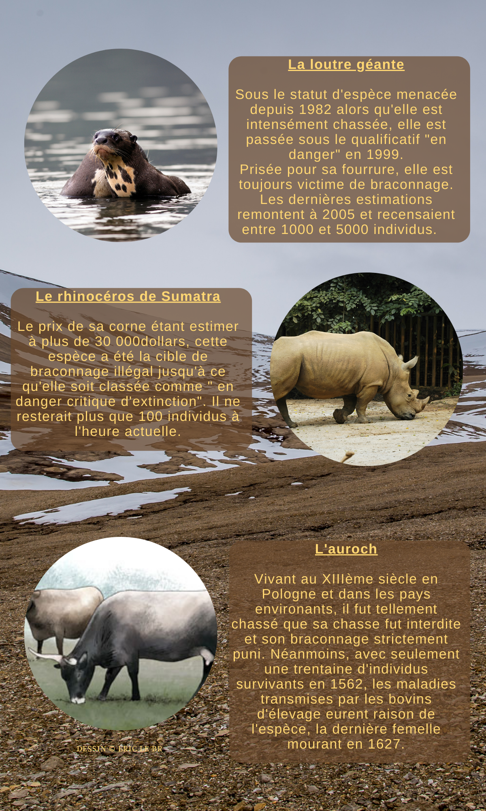
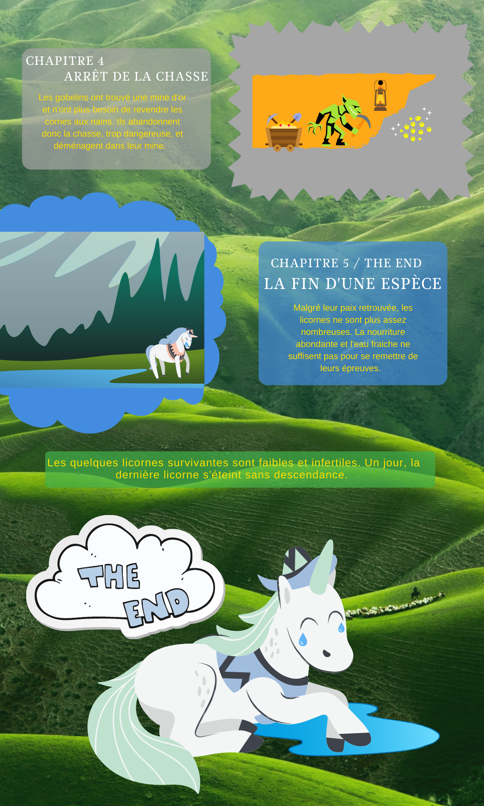

Histoire 1
Introduction
Histoire 1
Histoire 2

Faits réels associés
Histoire imaginaire

Voici quelques liens à suivre si vous désirez en apprendre plus sur ces espèces en danger. Par catégorie, ces espèces ont principalement été victimes...
...de la migration.
Le caribou de Peary
Le gnou
...de la chasse.
La loutre géante
Le rhinocéros de Sumatra
L'auroch